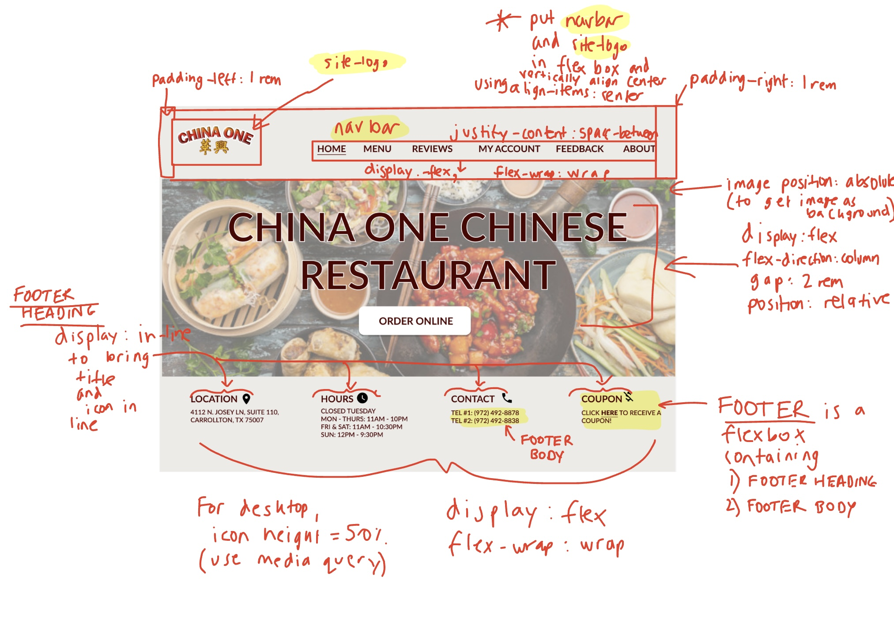
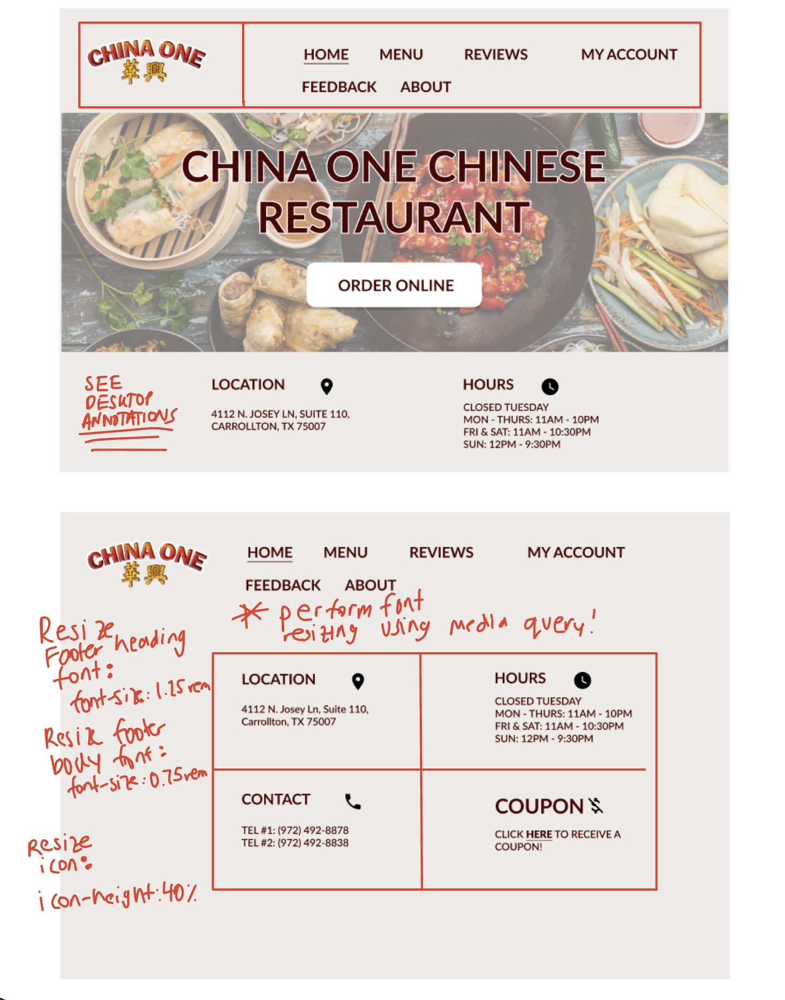
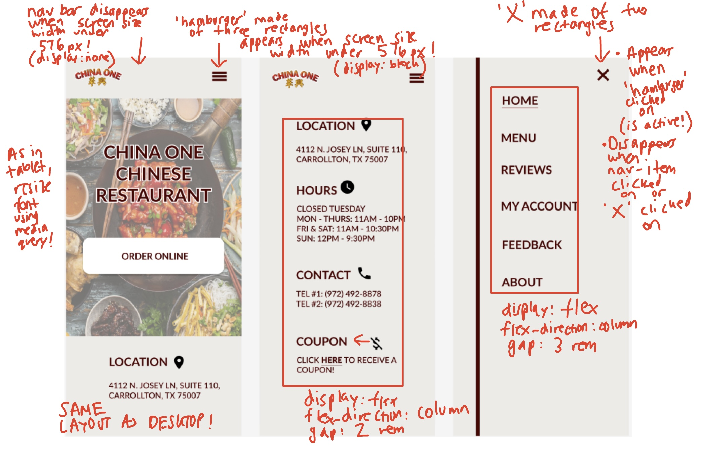

Responsive Redesign
To practice the workflow of redesigning websites, I decided to transform a website
that needed improvement. I chose a website belonging to a local Chinese restaurant near
where I live. The existing interface had flaws that needed to be addressed. To address the issues
of the existing interface, I created both lo-fidelity and hi-fidelity prototypes and built a
responsive website based on these prototypes. For the final product, click here.
Part 1: Identifying Usability Problems
Chosen Interface
I chose this custom-made restaurant ordering site since I saw many opportunities for improvement in visual design (e.g. better use of white space, headings of different weights/levels, more intuitive layout).
Usability Analysis
Learnability
-
First-time users may have a hard time learning about the restaurant due to the bulky body of text in the “Welcome” section, which makes it harder to extract relevant information
-
First-time users may have a hard time finding the link to the customer reviews since the link is placed within a body of text
Memorability
-
The menu option is located in a logical place since it is an element in the navigation bar. Thus, it is easy for casual users to recall where to look to place an order
-
However, casual users may find it difficult to recall where the telephone number is located since all the relevant information seems to be stored in the bulky body of text in the ‘Welcome’ section
Efficiency
-
“Order online” could be turned from bolded text to a button that transports users to the menu page to make ordering easier and more efficient
-
The address and contact information are related pieces of information that should be situated near each other. Currently, the contact information is located at the top-left corner; the address is located in the middle of the screen.
Accessibility Findings
While the WebAIM Wave accessibility tool was unable to render my page correctly,
I was still able to leverage the tool to find possible accessibility problems. I agreed with most of the
problems pointed out by the tool. For example, one problem raised was that, many of the images lacked
alternative text. The lack of alternative text is alarming — it affects users of the site who are visually
impaired. These users rely on screen readers that process alternative text to communicate the contents of the site.
Also, the tool warned that there was low contrast between the text and background colors. While the text seemed
readable to me, it may be that other users may have a hard time reading the text.
Part 2: Visual Redesign
Low-Fidelity Wireframing
To address the usability issues, I created low-fidelity wireframes for desktop,
tablet, and mobile sizes. I have annotated the desktop prototype with the intent
of some of my design choices. These annotations also apply to the other low-fidelity
wireframes.
Desktop Low-Fidelity Wireframe

Tablet Low-Fidelity Wireframe

Mobile Low-Fidelity Wireframe

Visual Design Style Guide
Next, I created a visual design style guide to thoroughly describe the different
base states, interaction states, and other visual elements used on the actual website.
High-Fidelity Prototyping
After creating a visual design style guide, I created high-fidelity prototypes. I used
visual design principles such as color, alignment, and font differences to show visual hierarchy
in the interface.
Desktop High-Fidelity Prototype

Annotated Desktop High-Fidelity Prototype

Tablet High-Fidelity Prototypes


Annotated Tablet High-Fidelity Prototypes

Mobile High-Fidelity Prototypes

Annotated Mobile High-Fidelity Prototypes

Conclusion
By analyzing a simple website, I was able to identify several usability flaws. I found that
it was incredibly helpful to fragment the redesigning process into separate steps: identification of
flaws, lo-fi prototyping, hi-fi prototyping, and redesigning the actual site. I realized the challenges
of making a website that caters to first-time, casual, and frequent users. But more importantly, I realized
how using a systematic process can help overcome these challenges in building a great interface.
Citations
To implement the mobile navigation bar, I referenced the following link: